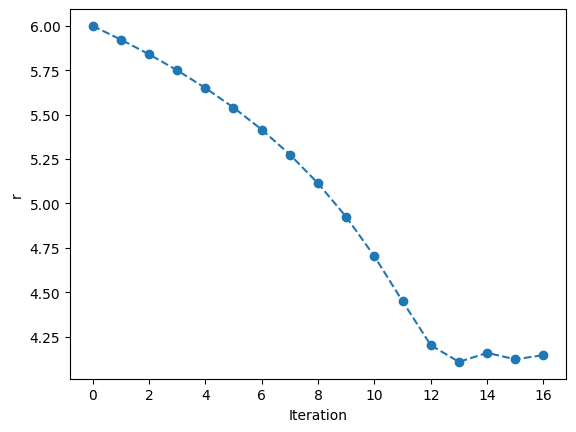
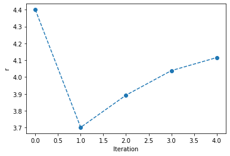

Exercises¶
The first exercise was the fizzbuzz exercise. This is particularly popular in progaramming hiring practices, and covered in detail in this Tom Scott YouTube video. As discussed in the video, there are multiple solutions to this problem, below is just one example of it.
for i in range(1, 101):
print_string = ''
if i % 3 == 0:
print_string += 'Fizz'
if i % 5 == 0:
print_string += 'Buzz'
if print_string == '':
print_string += str(i)
print(print_string)
1
2
Fizz
4
Buzz
Fizz
7
8
Fizz
Buzz
11
Fizz
13
14
FizzBuzz
16
17
Fizz
19
Buzz
Fizz
22
23
Fizz
Buzz
26
Fizz
28
29
FizzBuzz
31
32
Fizz
34
Buzz
Fizz
37
38
Fizz
Buzz
41
Fizz
43
44
FizzBuzz
46
47
Fizz
49
Buzz
Fizz
52
53
Fizz
Buzz
56
Fizz
58
59
FizzBuzz
61
62
Fizz
64
Buzz
Fizz
67
68
Fizz
Buzz
71
Fizz
73
74
FizzBuzz
76
77
Fizz
79
Buzz
Fizz
82
83
Fizz
Buzz
86
Fizz
88
89
FizzBuzz
91
92
Fizz
94
Buzz
Fizz
97
98
Fizz
Buzz
The second exercise was to extend the enery minimisation code from the gradient descent and Newton’s method exercises to include some logical stopping arguments. Looking first at the gradient descent method.
def first_derivative(r, A, B):
"""
The first derivative of the Lennard-Jones potential model.
Args:
r (float): Atom-atom distance (Å).
A (float): Interaction parameter (eVÅ^12).
B (float): Interaction parameter (eVÅ^6).
Returns:
(float): Potential energy.
"""
return -12. * A / r ** 13 + 6 * B / r ** 7
A = 1e5
B = 40
alpha = 100
r = 6.0
r_list = [r]
for i in range(30):
E_dash = first_derivative(r, A, B)
r_new = r - alpha * E_dash
if abs(r_new - r) < 0.02:
break
r = r_new
r_list.append(r)
import matplotlib.pyplot as plt
plt.plot(range(len(r_list)), r_list, 'o--')
plt.xlabel('Iteration')
plt.ylabel('r')
plt.show()

Now for Newton’s method.
def second_derivative(r, A, B):
"""
The second derivative of the Lennard-Jones potential model.
Args:
r (float): Atom-atom distance (Å).
A (float): Interaction parameter (eVÅ^12).
B (float): Interaction parameter (eVÅ^6).
Returns:
(float): Potential energy.
"""
return 156. * A / r ** 14 - 42 * B / r ** 8
A = 1e5
B = 40
r = 4.4
r_list = [r]
for i in range(30):
E_dash = first_derivative(r, A, B)
E_ddash = second_derivative(r, A, B)
r_new = r - E_dash / E_ddash
if abs(r_new - r) < 0.02:
break
r = r_new
r_list.append(r)
plt.plot(range(len(r_list)), r_list, 'o--')
plt.xlabel('Iteration')
plt.ylabel('r')
plt.show()
